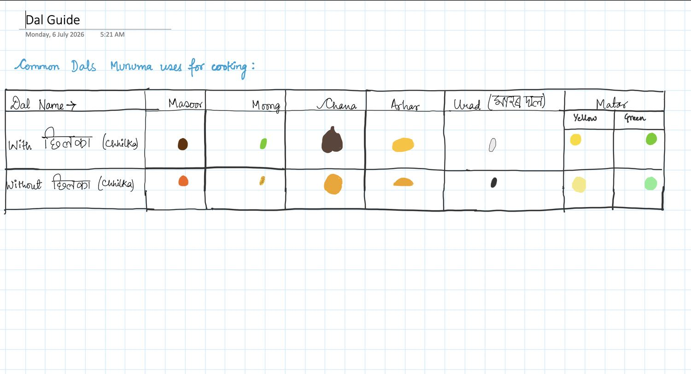

Reference
Dal Guide
Spicemasoor
Written6 July 2026
FromHer handwriting
Tagsdal · reference · chart
Common Dals Munuma uses for cooking:
The original is a hand-drawn table with a painted swatch of each dal in every cell. The structure is set out below; the colours are in the image.
| Dal Name → | Masoor | Moong | Chana | Arhar | Urad | Matar (Yellow) | Matar (Green) |
|---|---|---|---|---|---|---|---|
| With छिलका (chhilka) | dark brown | green | dark brown, whole | golden yellow | black | yellow | green |
| Without छिलका (chhilka) | orange | small yellow | golden orange | orange-yellow | white | pale yellow | light green |
A Devanagari annotation beside Urad in the original is not legible enough to transcribe.
The two Urad cells are the other way round in the drawing. The values above are the corrected ones: urad with the skin on is black, and skinned urad is white.
